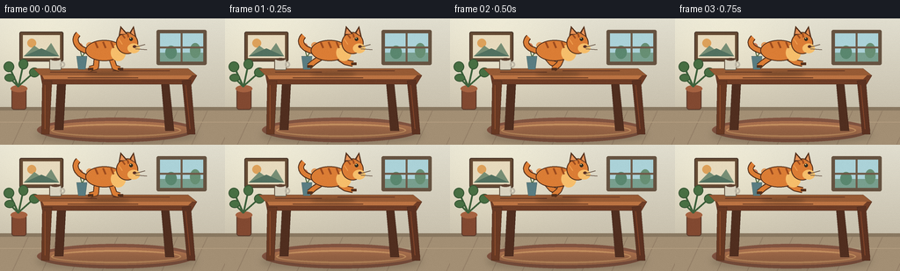
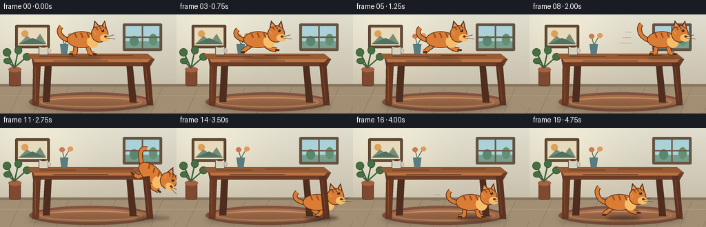

CODING AGENTS AS PIXEL WORLD MODELS
traex/GPT-5.6-Sol · dynamic_spatial_relationship_0010
点击播放 · 原生 RGB 像素
逐轮保存的候选
回放视频、检查图与代码变化。
每份候选均可单独播放。实际图片检查记录在下方工具轨迹中。
候选 01播放与检查图
点击播放 · 原生 RGB 像素


展开代码变化
--- 上一保存版本
+++ 本次保存版本
@@ -0,0 +1,232 @@
+from pathlib import Path
+import math
+import numpy as np
+from PIL import Image, ImageDraw, ImageFilter
+import artifact_io
+
+W,H,N = 256,144,20
+S=4
+
+def sc(v): return int(round(v*S))
+def box(b): return tuple(sc(x) for x in b)
+def pts(p): return [(sc(x),sc(y)) for x,y in p]
+
+def line(draw, p, fill, width=1, joint='curve'):
+ draw.line(pts(p), fill=fill, width=sc(width), joint=joint)
+
+def bezier(p0,p1,p2,p3,n=25):
+ out=[]
+ for t in np.linspace(0,1,n):
+ u=1-t
+ out.append((u**3*p0[0]+3*u*u*t*p1[0]+3*u*t*t*p2[0]+t**3*p3[0],
+ u**3*p0[1]+3*u*u*t*p1[1]+3*u*t*t*p2[1]+t**3*p3[1]))
+ return out
+
+def background(frame):
+ # softly graded warm room
+ yy=np.arange(H*S)[:,None]
+ xx=np.arange(W*S)[None,:]
+ top=np.array([225,222,207.],dtype=float); bot=np.array([191,181,160.],dtype=float)
+ a=np.clip(yy/(H*S),0,1)[...,None]
+ arr=top*(1-a)+bot*a
+ arr=np.broadcast_to(arr,(H*S,W*S,3)).copy()
+ glow=np.exp(-(((xx-sc(52))/sc(82))**2+((yy-sc(34))/sc(62))**2))[...,None]
+ arr=np.clip(arr+glow*np.array([18,17,11]),0,255).astype(np.uint8)
+ im=Image.fromarray(arr,'RGB')
+ d=ImageDraw.Draw(im)
+ # back wall seams and skirting
+ d.rectangle(box((0,101,256,105)), fill=(136,119,96))
+ d.rectangle(box((0,105,256,144)), fill=(163,143,116))
+ for x in range(-20,280,34):
+ line(d,[(x,144),(x+18,105)],(148,127,103),1)
+ line(d,[(0,118),(256,118)],(177,155,126),1)
+ # framed art
+ d.rounded_rectangle(box((22,15,72,49)),radius=sc(2),fill=(102,75,52),outline=(69,51,39),width=sc(1))
+ d.rectangle(box((26,19,68,45)),fill=(231,218,189))
+ # minimalist hills in frame
+ d.ellipse(box((31,23,41,33)),fill=(221,161,91))
+ d.polygon(pts([(27,43),(39,31),(50,39),(58,28),(67,43)]),fill=(119,142,117))
+ d.polygon(pts([(27,43),(47,34),(67,43)]),fill=(82,113,96))
+ # window with outside light
+ d.rounded_rectangle(box((178,13,235,53)),radius=sc(2),fill=(102,83,65))
+ d.rectangle(box((182,17,231,49)),fill=(171,210,216))
+ # sky gradient impression and distant trees
+ d.rectangle(box((182,39,231,49)),fill=(120,159,142))
+ d.ellipse(box((188,31,201,46)),fill=(90,135,111))
+ d.ellipse(box((216,28,228,45)),fill=(103,143,116))
+ d.rectangle(box((205.5,17,207.5,49)),fill=(111,91,73))
+ d.rectangle(box((182,32,231,34)),fill=(111,91,73))
+ # plant behind table on left
+ d.rounded_rectangle(box((13,79,30,104)),radius=sc(3),fill=(130,73,49),outline=(91,58,43),width=sc(1))
+ d.ellipse(box((12,76,31,84)),fill=(165,98,65))
+ for stem,end in [((21,78),(9,52)),((21,78),(27,50)),((21,77),(39,61)),((21,78),(11,68))]:
+ line(d,[stem,end],(62,97,60),2)
+ for b in [(4,49,16,61),(21,46,32,58),(33,56,45,67),(5,63,17,72)]:
+ d.ellipse(box(b),fill=(72,111,67),outline=(55,86,52),width=sc(1))
+ # woven rug grounds final cat
+ d.ellipse(box((42,113,222,141)),fill=(129,83,64))
+ d.ellipse(box((48,117,216,137)),fill=(171,113,78))
+ d.ellipse(box((58,120,206,135)),outline=(206,151,101),width=sc(2))
+ return im
+
+def draw_table(im):
+ d=ImageDraw.Draw(im)
+ # soft table shadow
+ shadow=Image.new('RGBA',im.size,(0,0,0,0)); sd=ImageDraw.Draw(shadow)
+ sd.ellipse(box((41,124,224,141)),fill=(48,34,25,60))
+ shadow=shadow.filter(ImageFilter.GaussianBlur(sc(4)))
+ im.paste(shadow,(0,0),shadow)
+ d=ImageDraw.Draw(im)
+ # rear legs
+ for poly in [[(65,70),(75,70),(72,127),(62,127)],[(183,70),(192,70),(198,128),(188,128)]]:
+ d.polygon(pts(poly),fill=(80,46,31),outline=(53,33,25))
+ # tabletop, broad and unmistakable
+ d.polygon(pts([(38,57),(214,57),(224,65),(46,65)]),fill=(151,91,53),outline=(74,43,29))
+ d.polygon(pts([(46,65),(224,65),(218,75),(48,75)]),fill=(111,61,38),outline=(66,38,27))
+ d.polygon(pts([(48,65),(218,65),(214,69),(50,69)]),fill=(188,116,67))
+ # wood grain
+ for x0,x1,y in [(57,110,61),(128,193,59.5),(77,157,67.5),(161,207,71.5)]:
+ line(d,[(x0,y),(x1,y)],(104,58,37),1)
+ # cup at left, helps establish top plane
+ d.rounded_rectangle(box((56,46,70,59)),radius=sc(2),fill=(216,210,191),outline=(102,85,67),width=sc(1))
+ d.ellipse(box((58,45,68,48)),fill=(94,66,49))
+ d.ellipse(box((68,49,74,56)),outline=(189,182,165),width=sc(2))
+ # flower vase safely away from path
+ d.polygon(pts([(87,43),(99,43),(97,58),(89,58)]),fill=(89,125,130),outline=(56,79,80))
+ line(d,[(93,43),(90,32)],(66,97,57),1)
+ line(d,[(94,43),(101,31)],(66,97,57),1)
+ d.ellipse(box((86,28,94,35)),fill=(206,121,83))
+ d.ellipse(box((98,27,106,34)),fill=(225,154,93))
+
+def draw_front_legs(im):
+ d=ImageDraw.Draw(im)
+ # nearer legs overlay subjects naturally when they pass behind
+ d.polygon(pts([(48,71),(59,71),(56,132),(47,132)]),fill=(104,57,35),outline=(58,36,27))
+ d.polygon(pts([(207,71),(217,70),(222,132),(213,132)]),fill=(92,50,33),outline=(56,34,26))
+ line(d,[(51,76),(51,126)],(142,79,45),1)
+ line(d,[(211,76),(216,126)],(130,69,42),1)
+
+def cat_sprite(pose=0, tail_phase=0, airborne=False):
+ # logical sprite 86 x 62, baseline y=52, facing right
+ sw,sh=92,66
+ lay=Image.new('RGBA',(sc(sw),sc(sh)),(0,0,0,0)); d=ImageDraw.Draw(lay)
+ outline=(83,48,28,255); dark=(157,76,31,255); fur=(219,125,53,255); light=(246,190,107,255)
+ # tail behind body, expressive but attached
+ if airborne:
+ curve=bezier((25,31),(9,22),(3,11),(13,7),n=30)
+ else:
+ lift=4*math.sin(tail_phase)
+ curve=bezier((23,32),(10,30),(4,19+lift),(11,12+lift),n=30)
+ line(d,curve,outline,7)
+ line(d,curve,fur,5)
+ # rear legs first; running cycles are exaggerated for readability
+ phases=[0,1,2,1]
+ ph=phases[pose%4]
+ if airborne:
+ legs=[[(34,38),(29,47),(19,48)],[(48,38),(56,45),(65,43)]]
+ elif ph==0:
+ legs=[[(32,38),(31,50),(24,52)],[(48,38),(52,50),(58,52)]]
+ elif ph==1:
+ legs=[[(32,38),(23,44),(17,49)],[(49,38),(58,44),(67,46)]]
+ else:
+ legs=[[(31,38),(37,45),(43,47)],[(49,38),(45,47),(39,52)]]
+ for seg in legs:
+ line(d,seg,outline,7); line(d,seg,fur,5)
+ x,y=seg[-1]; line(d,[(x-2,y),(x+4,y)],outline,3)
+ # body and chest
+ d.ellipse(box((19,19,62,43)),fill=outline)
+ d.ellipse(box((20,20,61,42)),fill=fur)
+ d.ellipse(box((48,24,65,43)),fill=light)
+ # body stripes
+ for x in [30,39,48]:
+ line(d,[(x,21),(x+3,28)],dark,2)
+ # neck/head outline
+ d.ellipse(box((54,10,79,35)),fill=outline)
+ d.ellipse(box((55,11,78,34)),fill=fur)
+ # ears
+ d.polygon(pts([(57,14),(59,3),(67,12)]),fill=outline)
+ d.polygon(pts([(58.5,12),(60,6),(65,12)]),fill=(230,146,87,255))
+ d.polygon(pts([(69,11),(74,3),(77,16)]),fill=outline)
+ d.polygon(pts([(71,11),(73.5,6),(75,14)]),fill=(230,146,87,255))
+ # muzzle and face
+ d.ellipse(box((67,23,81,34)),fill=light)
+ d.ellipse(box((73,25,77,28)),fill=(92,50,38,255))
+ d.ellipse(box((69,16,73,20)),fill=(48,43,31,255))
+ d.ellipse(box((70,16.5,71,17.5)),fill=(250,236,171,255))
+ # face stripes and whiskers
+ line(d,[(61,13),(64,17)],dark,2); line(d,[(67,12),(68,16)],dark,2)
+ line(d,[(76,27),(87,24)],(87,66,52,220),1)
+ line(d,[(76,29),(89,30)],(87,66,52,220),1)
+ # shoulder contour highlight
+ line(d,[(57,18),(61,24)],(239,157,78,255),1)
+ return lay
+
+def paste_cat(im,x,baseline,pose,angle=0,tail=0,air=False):
+ spr=cat_sprite(pose,tail,air)
+ # anchor in unrotated sprite: body center x=46, baseline y=52
+ if angle:
+ spr=spr.rotate(-angle,resample=Image.Resampling.BICUBIC,expand=True)
+ # expanded rotation shifts center; approximate anchor at rotated image center with baseline offset
+ px=sc(x)-spr.width//2
+ py=sc(baseline)-spr.height//2-sc(4)
+ else:
+ px=sc(x)-sc(46); py=sc(baseline)-sc(52)
+ im.paste(spr,(int(px),int(py)),spr)
+
+def add_motion(im, frame, x, y):
+ if frame not in (6,7,8,9,15,16,17): return
+ ov=Image.new('RGBA',im.size,(0,0,0,0)); d=ImageDraw.Draw(ov)
+ for j,dy in enumerate([-8,0,8]):
+ length=10+4*j
+ line(d,[(x-49-length,y-24+dy),(x-50,y-24+dy)],(110,76,50,70),1)
+ im.paste(ov,(0,0),ov)
+
+def trajectory(i):
+ # Five beats: observe on top, sprint right, leap down, settle under tabletop.
+ if i<=4:
+ return 124+0.5*math.sin(i),57.5,0,False
+ if i<=9:
+ t=(i-4)/5
+ return 124+82*(t*t*(3-2*t)),57.5,0,False
+ if i<=13:
+ t=(i-9)/4
+ # clear descending arc just beyond the table edge
+ x=206+16*math.sin(math.pi*t)
+ y=58+69*(t*t)
+ ang=15+25*math.sin(math.pi*t)
+ return x,y,ang,True
+ # land then dash left into the open space below the table
+ endx=[210,194,176,159,145,136][i-14]
+ return endx,129,0,False
+
+def make_frame(i):
+ im=background(i)
+ draw_table(im)
+ x,y,ang,air=trajectory(i)
+ # grounding shadow follows the cat and expands on floor
+ sh=Image.new('RGBA',im.size,(0,0,0,0)); sd=ImageDraw.Draw(sh)
+ if i<=9:
+ sd.ellipse(box((x-27,61,x+24,66)),fill=(40,27,18,65))
+ else:
+ floorx=max(55,min(222,x)); alpha=int(70+60*max(0,(y-70))/60)
+ sd.ellipse(box((floorx-25,128,floorx+25,134)),fill=(40,27,18,min(125,alpha)))
+ sh=sh.filter(ImageFilter.GaussianBlur(sc(2)))
+ im.paste(sh,(0,0),sh)
+ add_motion(im,i,x,y)
+ paste_cat(im,x,y,i,ang,tail=i*.55,air=air)
+ draw_front_legs(im)
+ # gentle global texture and downsample for painterly antialiasing
+ im=im.resize((W,H),Image.Resampling.LANCZOS).convert('RGB')
+ arr=np.array(im,dtype=np.int16)
+ # subtle deterministic film grain keeps gradients organic
+ rng=np.random.default_rng(2026+i)
+ noise=rng.normal(0,0.65,arr.shape[:2])[:,:,None]
+ arr=np.clip(arr+noise,0,255).astype(np.uint8)
+ return arr
+
+def main():
+ frames=np.stack([make_frame(i) for i in range(N)],axis=0)
+ artifact_io.save(frames,Path(__file__).resolve().parent)
+
+if __name__=='__main__':
+ main()
可观测工具轨迹
实际执行的命令与返回图片。
命令 1exit 0
/bin/bash -lc "cat prompt.txt && printf '\\n---RULES---\\n' && cat GENERATION_RULES.md && printf '\\n---SPEC---\\n' && cat task_spec.json"
命令 2exit 0
/bin/bash -lc "find . -maxdepth 2 -type f -printf '%p\\n' | sort | head -200 && printf '\\nTOOLS\\n' && command -v ffmpeg || true; command -v convert || true; command -v python3 || true"
命令 3exit 0
/bin/bash -lc 'cat artifact_io.py'
命令 4exit 0
/bin/bash -lc "python3 - <<'PY'
try:
from PIL import Image, ImageDraw, ImageFilter
print('PIL OK')
except Exception as e: print(e)
try:
import numpy as np
print('numpy',np.__version__)
except Exception as e: print(e)
PY"命令 5exit 0
/bin/bash -lc "cat > generate.py <<'PY'
from pathlib import Path
import math
import numpy as np
from PIL import Image, ImageDraw, ImageFilter
import artifact_io
W,H,N = 256,144,20
S=4
def sc(v): return int(round(v*S))
def box(b): return tuple(sc(x) for x in b)
def pts(p): return [(sc(x),sc(y)) for x,y in p]
def line(draw, p, fill, width=1, joint='curve'):
draw.line(pts(p), fill=fill, width=sc(width), joint=joint)
def bezier(p0,p1,p2,p3,n=25):
out=[]
for t in np.linspace(0,1,n):
u=1-t
out.append((u**3*p0[0]+3*u*u*t*p1[0]+3*u*t*t*p2[0]+t**3*p3[0],
u**3*p0[1]+3*u*u*t*p1[1]+3*u*t*t*p2[1]+t**3*p3[1]))
return out
def background(frame):
# softly graded warm room
yy=np.arange(H*S)[:,None]
xx=np.arange(W*S)[None,:]
top=np.array([225,222,207.],dtype=float); bot=np.array([191,181,160.],dtype=float)
a=np.clip(yy/(H*S),0,1)[...,None]
arr=top*(1-a)+bot*a
arr=np.broadcast_to(arr,(H*S,W*S,3)).copy()
glow=np.exp(-(((xx-sc(52))/sc(82))**2+((yy-sc(34))/sc(62))**2))[...,None]
arr=np.clip(arr+glow*np.array([18,17,11]),0,255).astype(np.uint8)
im=Image.fromarray(arr,'RGB')
d=ImageDraw.Draw(im)
# back wall seams and skirting
d.rectangle(box((0,101,256,105)), fill=(136,119,96))
d.rectangle(box((0,105,256,144)), fill=(163,143,116))
for x in range(-20,280,34):
line(d,[(x,144),(x+18,105)],(148,127,103),1)
line(d,[(0,118),(256,118)],(177,155,126),1)
# framed art
d.rounded_rectangle(box((22,15,72,49)),radius=sc(2),fill=(102,75,52),outline=(69,51,39),width=sc(1))
d.rectangle(box((26,19,68,45)),fill=(231,218,189))
# minimalist hills in frame
d.ellipse(box((31,23,41,33)),fill=(221,161,91))
d.polygon(pts([(27,43),(39,31),(50,39),(58,28),(67,43)]),fill=(119,142,117))
d.polygon(pts([(27,43),(47,34),(67,43)]),fill=(82,113,96))
# window with outside light
d.rounded_rectangle(box((178,13,235,53)),radius=sc(2),fill=(102,83,65))
d.rectangle(box((182,17,231,49)),fill=(171,210,216))
# sky gradient impression and distant trees
d.rectangle(box((182,39,231,49)),fill=(120,159,142))
d.ellipse(box((188,31,201,46)),fill=(90,135,111))
d.ellipse(box((216,28,228,45)),fill=(103,143,116))
d.rectangle(box((205.5,17,207.5,49)),fill=(111,91,73))
d.rectangle(box((182,32,231,34)),fill=(111,91,73))
# plant behind table on left
d.rounded_rectangle(box((13,79,30,104)),radius=sc(3),fill=(130,73,49),outline=(91,58,43),width=sc(1))
d.ellipse(box((12,76,31,84)),fill=(165,98,65))
for stem,end in [((21,78),(9,52)),((21,78),(27,50)),((21,77),(39,61)),((21,78),(11,68))]:
line(d,[stem,end],(62,97,60),2)
for b in [(4,49,16,61),(21,46,32,58),(33,56,45,67),(5,63,17,72)]:
d.ellipse(box(b),fill=(72,111,67),outline=(55,86,52),width=sc(1))
# woven rug grounds final cat
d.ellipse(box((42,113,222,141)),fill=(129,83,64))
d.ellipse(box((48,117,216,137)),fill=(171,113,78))
d.ellipse(box((58,120,206,135)),outline=(206,151,101),width=sc(2))
return im
def draw_table(im):
d=ImageDraw.Draw(im)
# soft table shadow
shadow=Image.new('RGBA',im.size,(0,0,0,0)); sd=ImageDraw.Draw(shadow)
sd.ellipse(box((41,124,224,141)),fill=(48,34,25,60))
shadow=shadow.filter(ImageFilter.GaussianBlur(sc(4)))
im.paste(shadow,(0,0),shadow)
d=ImageDraw.Draw(im)
# rear legs
for poly in [[(65,70),(75,70),(72,127),(62,127)],[(183,70),(192,70),(198,128),(188,128)]]:
d.polygon(pts(poly),fill=(80,46,31),outline=(53,33,25))
# tabletop, broad and unmistakable
d.polygon(pts([(38,57),(214,57),(224,65),(46,65)]),fill=(151,91,53),outline=(74,43,29))
d.polygon(pts([(46,65),(224,65),(218,75),(48,75)]),fill=(111,61,38),outline=(66,38,27))
d.polygon(pts([(48,65),(218,65),(214,69),(50,69)]),fill=(188,116,67))
# wood grain
for x0,x1,y in [(57,110,61),(128,193,59.5),(77,157,67.5),(161,207,71.5)]:
line(d,[(x0,y),(x1,y)],(104,58,37),1)
# cup at left, helps establish top plane
d.rounded_rectangle(box((56,46,70,59)),radius=sc(2),fill=(216,210,191),outline=(102,85,67),width=sc(1))
d.ellipse(box((58,45,68,48)),fill=(94,66,49))
d.ellipse(box((68,49,74,56)),outline=(189,182,165),width=sc(2))
# flower vase safely away from path
d.polygon(pts([(87,43),(99,43),(97,58),(89,58)]),fill=(89,125,130),outline=(56,79,80))
line(d,[(93,43),(90,32)],(66,97,57),1)
line(d,[(94,43),(101,31)],(66,97,57),1)
d.ellipse(box((86,28,94,35)),fill=(206,121,83))
d.ellipse(box((98,27,106,34)),fill=(225,154,93))
def draw_front_legs(im):
d=ImageDraw.Draw(im)
# nearer legs overlay subjects naturally when they pass behind
d.polygon(pts([(48,71),(59,71),(56,132),(47,132)]),fill=(104,57,35),outline=(58,36,27))
d.polygon(pts([(207,71),(217,70),(222,132),(213,132)]),fill=(92,50,33),outline=(56,34,26))
line(d,[(51,76),(51,126)],(142,79,45),1)
line(d,[(211,76),(216,126)],(130,69,42),1)
def cat_sprite(pose=0, tail_phase=0, airborne=False):
# logical sprite 86 x 62, baseline y=52, facing right
sw,sh=92,66
lay=Image.new('RGBA',(sc(sw),sc(sh)),(0,0,0,0)); d=ImageDraw.Draw(lay)
outline=(83,48,28,255); dark=(157,76,31,255); fur=(219,125,53,255); light=(246,190,107,255)
# tail behind body, expressive but attached
if airborne:
curve=bezier((25,31),(9,22),(3,11),(13,7),n=30)
else:
lift=4*math.sin(tail_phase)
curve=bezier((23,32),(10,30),(4,19+lift),(11,12+lift),n=30)
line(d,curve,outline,7)
line(d,curve,fur,5)
# rear legs first; running cycles are exaggerated for readability
phases=[0,1,2,1]
ph=phases[pose%4]
if airborne:
legs=[[(34,38),(29,47),(19,48)],[(48,38),(56,45),(65,43)]]
elif ph==0:
legs=[[(32,38),(31,50),(24,52)],[(48,38),(52,50),(58,52)]]
elif ph==1:
legs=[[(32,38),(23,44),(17,49)],[(49,38),(58,44),(67,46)]]
else:
legs=[[(31,38),(37,45),(43,47)],[(49,38),(45,47),(39,52)]]
for seg in legs:
line(d,seg,outline,7); line(d,seg,fur,5)
x,y=seg[-1]; line(d,[(x-2,y),(x+4,y)],outline,3)
# body and chest
d.ellipse(box((19,19,62,43)),fill=outline)
d.ellipse(box((20,20,61,42)),fill=fur)
d.ellipse(box((48,24,65,43)),fill=light)
# body stripes
for x in [30,39,48]:
line(d,[(x,21),(x+3,28)],dark,2)
# neck/head outline
d.ellipse(box((54,10,79,35)),fill=outline)
d.ellipse(box((55,11,78,34)),fill=fur)
# ears
d.polygon(pts([(57,14),(59,3),(67,12)]),fill=outline)
d.polygon(pts([(58.5,12),(60,6),(65,12)]),fill=(230,146,87,255))
d.polygon(pts([(69,11),(74,3),(77,16)]),fill=outline)
d.polygon(pts([(71,11),(73.5,6),(75,14)]),fill=(230,146,87,255))
# muzzle and face
d.ellipse(box((67,23,81,34)),fill=light)
d.ellipse(box((73,25,77,28)),fill=(92,50,38,255))
d.ellipse(box((69,16,73,20)),fill=(48,43,31,255))
d.ellipse(box((70,16.5,71,17.5)),fill=(250,236,171,255))
# face stripes and whiskers
line(d,[(61,13),(64,17)],dark,2); line(d,[(67,12),(68,16)],dark,2)
line(d,[(76,27),(87,24)],(87,66,52,220),1)
line(d,[(76,29),(89,30)],(87,66,52,220),1)
# shoulder contour highlight
line(d,[(57,18),(61,24)],(239,157,78,255),1)
return lay
def paste_cat(im,x,baseline,pose,angle=0,tail=0,air=False):
spr=cat_sprite(pose,tail,air)
# anchor in unrotated sprite: body center x=46, baseline y=52
if angle:
spr=spr.rotate(-angle,resample=Image.Resampling.BICUBIC,expand=True)
# expanded rotation shifts center; approximate anchor at rotated image center with baseline offset
px=sc(x)-spr.width//2
py=sc(baseline)-spr.height//2-sc(4)
else:
px=sc(x)-sc(46); py=sc(baseline)-sc(52)
im.paste(spr,(int(px),int(py)),spr)
def add_motion(im, frame, x, y):
if frame not in (6,7,8,9,15,16,17): return
ov=Image.new('RGBA',im.size,(0,0,0,0)); d=ImageDraw.Draw(ov)
for j,dy in enumerate([-8,0,8]):
length=10+4*j
line(d,[(x-49-length,y-24+dy),(x-50,y-24+dy)],(110,76,50,70),1)
im.paste(ov,(0,0),ov)
def trajectory(i):
# Five beats: observe on top, sprint right, leap down, settle under tabletop.
if i<=4:
return 124+0.5*math.sin(i),57.5,0,False
if i<=9:
t=(i-4)/5
return 124+82*(t*t*(3-2*t)),57.5,0,False
if i<=13:
t=(i-9)/4
# clear descending arc just beyond the table edge
x=206+16*math.sin(math.pi*t)
y=58+69*(t*t)
ang=15+25*math.sin(math.pi*t)
return x,y,ang,True
# land then dash left into the open space below the table
endx=[210,194,176,159,145,136][i-14]
return endx,129,0,False
def make_frame(i):
im=background(i)
draw_table(im)
x,y,ang,air=trajectory(i)
# grounding shadow follows the cat and expands on floor
sh=Image.new('RGBA',im.size,(0,0,0,0)); sd=ImageDraw.Draw(sh)
if i<=9:
sd.ellipse(box((x-27,61,x+24,66)),fill=(40,27,18,65))
else:
floorx=max(55,min(222,x)); alpha=int(70+60*max(0,(y-70))/60)
sd.ellipse(box((floorx-25,128,floorx+25,134)),fill=(40,27,18,min(125,alpha)))
sh=sh.filter(ImageFilter.GaussianBlur(sc(2)))
im.paste(sh,(0,0),sh)
add_motion(im,i,x,y)
paste_cat(im,x,y,i,ang,tail=i*.55,air=air)
draw_front_legs(im)
# gentle global texture and downsample for painterly antialiasing
im=im.resize((W,H),Image.Resampling.LANCZOS).convert('RGB')
arr=np.array(im,dtype=np.int16)
# subtle deterministic film grain keeps gradients organic
rng=np.random.default_rng(2026+i)
noise=rng.normal(0,0.65,arr.shape[:2])[:,:,None]
arr=np.clip(arr+noise,0,255).astype(np.uint8)
return arr
def main():
frames=np.stack([make_frame(i) for i in range(N)],axis=0)
artifact_io.save(frames,Path(__file__).resolve().parent)
if __name__=='__main__':
main()
PY
python3 generate.py
ls -lh pixels.npz inspection.png frames/00.png frames/19.png"视觉工具实际返回图片 1

保存候选 1 份；完成命令 5 次；可验证图片返回 1 张。原始 API 响应与完整日志保留在本地。